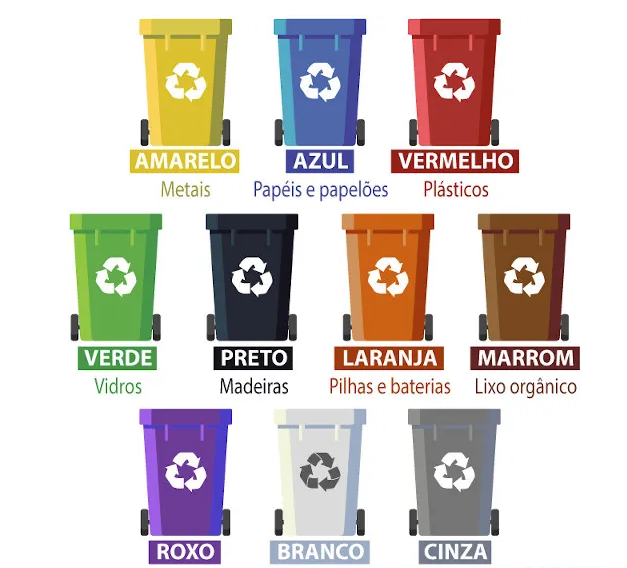

O que é Lixo consciente
Uma das práticas do Lixo consciente é se preocupar com o descarte do que é comprado, adquirido. Isso vale tanto na hora de entender sobre quem produz determinado produto, e o que faz com o lixo gerado no processo, quanto no cotidiano, ao dar o destino correto ao resíduo. Sejam orgânicos ou reciclados, principalmente, é de suma importância ser responsável tanto pela compra, como o seu lixo. Para fazer do mundo um lugar mais sustentável, continue lendo sobre redução e reciclagem de materiais duráveis: .
Cores da reciclagem
Os tipos de materiais recicláveis são comumente classificados por meio de cores. Essa forma é facilmente visualizada em lixeiras dispostas em espaços públicos e privados, logo é uma maneira de facilitar a separação dos resíduos sólidos. O conjunto de cores indicativas para reciclagem vem sendo constantemente ampliado em razão de novos materiais passíveis de transformação. A figura abaixo apresenta as cores mais utilizadas na reciclagem junto do seu significado:
| AMARELO | METAL |
|---|---|
| AZUL | PAPÉIS E PAPELÕES | VERMELHO | PLÁSTICO | VERDE | VÍDROS | PRETO | MADEIRAS | LARANJA | PILHAS E BATERIAS | MARROM | LIXO ORGÃNICO | ROXO | LIXO RADIOATIVO | BRANCO | LIXO HOSPITALAR | CINZA | RESIDUOS SOLIDOS QUE NÃO SÃO RECICLAVEIS |